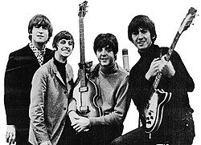
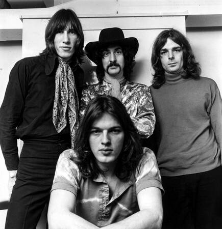

THE BEATLES
The Beatles fue una banda de Rock inglesa formada en Liverpool durante los años 1960
Compuesta la mayor parte de su historia por John Lennon, Paul McCartney, George Harrison y Ringo Starr y fueron parte del movimiento contracultural de los 60s.
En la actualidad se les suele considerar como el grupo más influyente de la música popular occidental

QUEEN
Formada en 1970 en Londres e integrada por el cantante y pianista Freddie Mercury, el guitarrista Brian May, el baterista Roger Taylor y el bajista John Deacon
Influenciados en sus primeros discos por el Rock Progresivo y el Hard Rock, pero la banda se aventuró eventualmente en trabajos mas convencionales y amigables con la radio, incorporando más estilos como el Arena Rock y el Pop Rock

PINK FLOYD
Fundada en Londres en 1965, considerada como un ícono cultural del siglo XX y una de las bandas mas influyentes, exitosas y aclamadas en la historia de la música popular
Formado inicialmente por el baterista Nick Mason, el tecladista y vocalista Richard Wright, el bajista y vocalista Roger Waters y el guitarrista y vocalista principal Syd Barrett.
Obtuvo gran popularidad dentro del circulo Underground gracias a su música psicodélica y espacial, que con el paso del tiempo evolucionó hacia el Rock Progresivo y el Rock Sinfónico, son conocidos por sus caciones de alto contenido filosófico junto a la experimentación sonora

A lo largo de la historia, el Rock ha ido desarrollando, logrando movimientos mas extensos y experimentales como el Shoegaze, conocido por la experimentación en el sonido usando guitarras con enormes capas de distorsión y creando un ambiente mucho más etereo y "espacial".